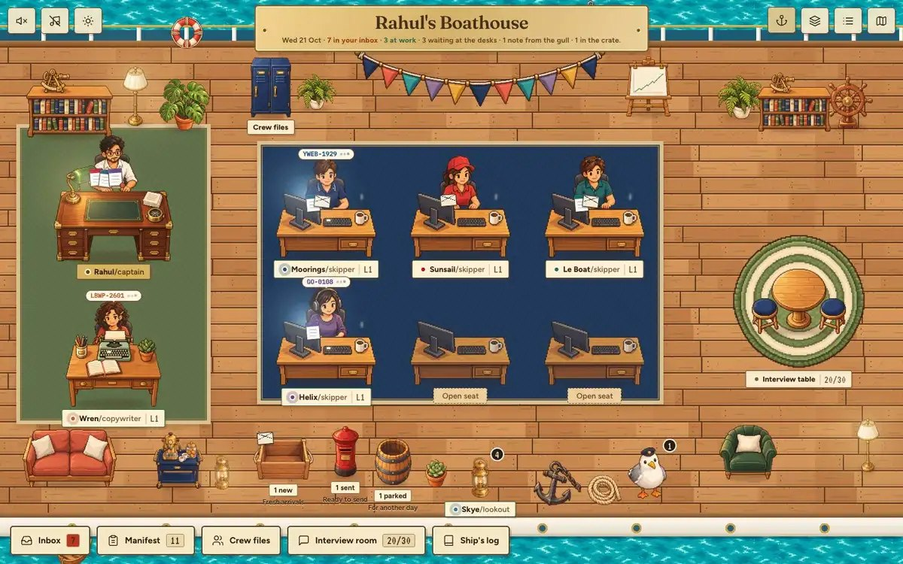
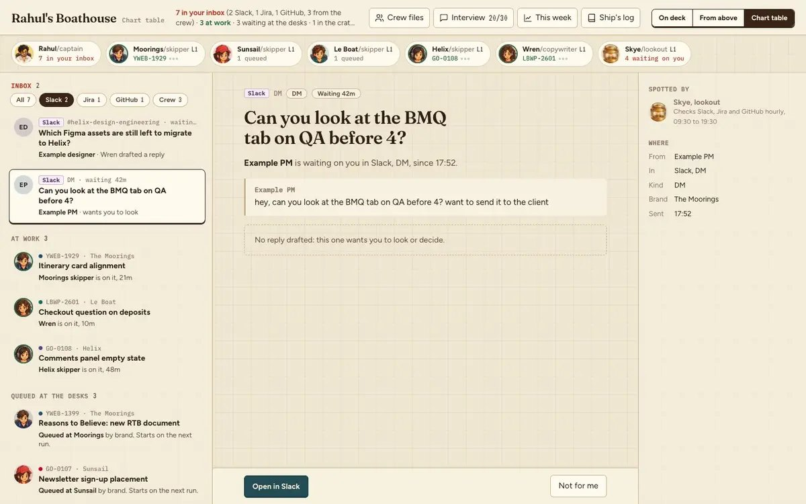

The captain
At Travelopia, a group of travel brands, I design for four: The Moorings and Sunsail for yacht charters, Le Boat and Emerald Star for canal holidays. Each has its own queue of tickets, reviews and questions in Slack, Jira and GitHub.
Four brands, and I am the only designer on most of them. So I built a crew of agents that works my queue before I log on and drafts in my voice, and a board to run it from. They draft. I decide.

Why a game, for a tool
An agent you cannot see is an agent you will not trust. The first version was a dashboard of statuses, and I had to read every row to know if anything was wrong. State you can see beats state you have to read. Who is working, on what, what is waiting on me, what went out: one glance. A skipper on a ticket leans in, types, and gets a chip naming it. Idle desks stay dark. Motion only where state changed; anything you read or act on holds still.

Drafts, never sends
A prompt is a suggestion. A hook is a guarantee. Every tool call the crew makes passes a gate in code before it runs. It always refuses to merge a pull request. In an unattended run it refuses every outward write, a Slack post, a Jira comment, a push, unless the item carries my approval or the desk has earned that action. Every decision is logged. The first one it ever made was to refuse a merge.

Trust is earned per action
Autonomy is a ladder for each desk and each kind of action, not a switch for the whole crew. Replying in Slack and pushing a branch are not the same risk. A desk moves up when 95% of its last 20 drafts of that kind went out unchanged and its evals pass. One reversal moves it down.
The evals are 46 real situations from my own history, answered blind and graded against what I actually did, on seven dimensions. The third run passed 10 of 46: judgement calls 7 of 8, Jira and pull requests none. That is the honest number, and it is why every desk is still at level one.
How the art was made
Claude Code wrote the brief; Codex drew to it: one style anchor, then every sprite, with each blink edited from its own base. 52 images from 60 attempts, 9 flagged for finishing by hand. The files were the only hand-off between the tools.